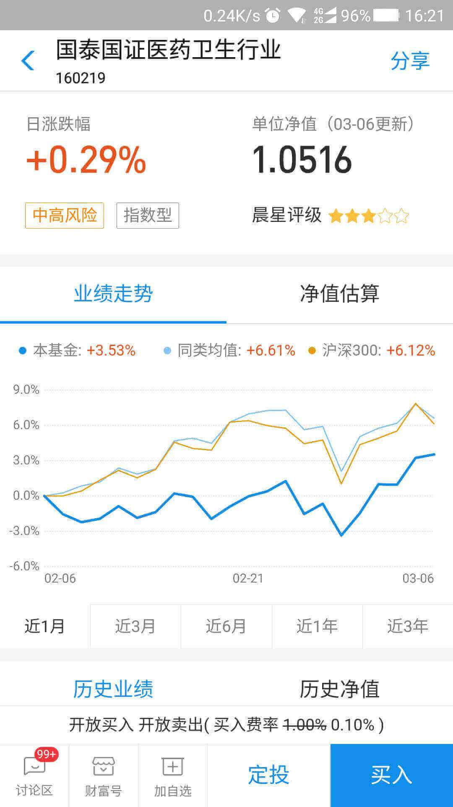
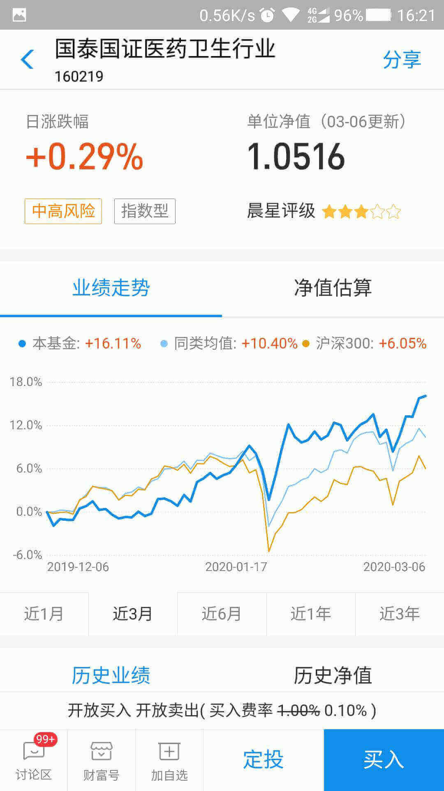

事情的起因很狗血，我怀疑蚂蚁财富的数据及分析不可信。那是半年前五指峰的一个阴雨的周末下午，我坐在窗前，品着地道的五指峰云雾，望着庭中的无言的苏铁。疫情依然笼罩着我们，形势尚不明朗，但隆冬已过，春天已临，复苏必将蔓延。就像那两株苏铁一样，一定也在以我看不见的方式在顽强生发。或许就如润公说的是场持久战呢，在这样的背景下，我开始琢磨投机医药的事情。
我随机点开了一支医药基金，160219，它看起来并不乐观。“别人恐惧我贪婪，别人贪婪我恐惧”，我打算开始建仓。但是等一下，这趋势线有点不对劲啊：为什么近1月走势黄线在上蓝线在下，而在更长周期的视图中却完全相反？


我的第一反应就是，这太诡异了不科学！一想到连参考都不可靠，我就后背发凉。就算换其他平台，一样也会被误导吧，于是我按下了暂停。马和猪一样不会上树，别人终归都不靠谱。于是我打算自己收集数据做分析再决策，而在那之前不动如山。就如伽利略在《试金者》写到：“它不能够被解读，除非学会它的语言并熟悉那些用这些语言描述的特征”。
讲到这，你一定会以为我是个天才，居然一眼就看穿了巨无霸的卑劣行径，在很长的一段时间，我也是这么认为的！但一直没有丑闻传出来，要么别人是笨蛋要么我是。随着学习的深入，终于在某一天我发现是原来竟然是自己错了，错在了静止与绝对！为了将不同的标的放在一起比较，业绩采用了相对增长幅度而不是绝对的量，同时因参考点的不一样，会导致位置与状态的不一样，这是初中物理常识。
后来市场在半年内就蹭蹭地赶上了高利贷，比钟秀勇老师说的卖白粉还夸张，但我不后悔当初的决定，不要碰自己不懂的东西。怀疑一切，打倒一切，建立一切，我才发觉自己精神世界也极度贫穷，要学的东西实在太多，道阻且长。我打算将自己的学习过程记录下来，结为《试金者》。